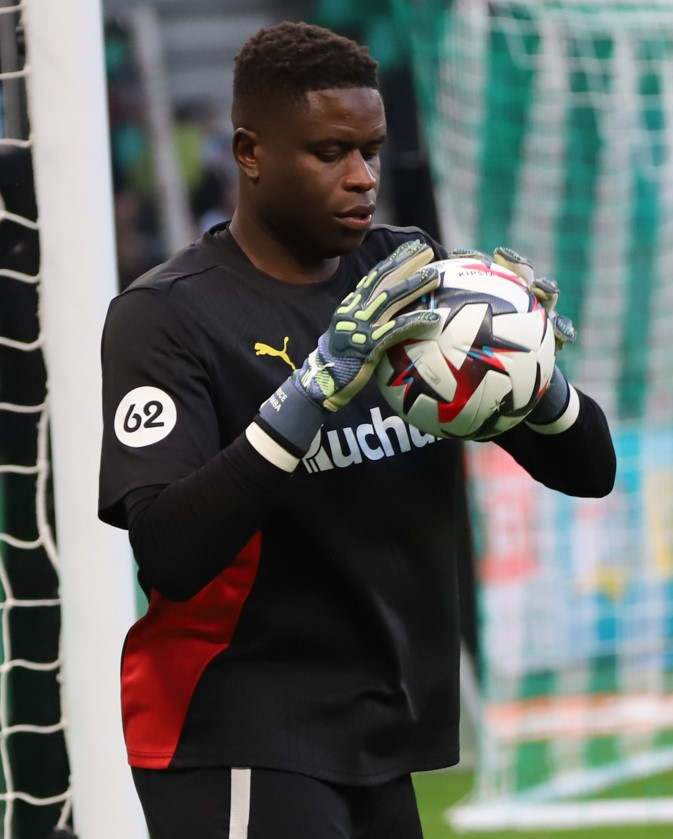
Autorzy zdjęć piłkarzy Francji i licencje
Zdjęcia pochodzą z Wikimedia Commons. Zostały zmniejszone i wykadrowane przez przeglądarkę na potrzeby listy zawodników i profili.
{kind=link}
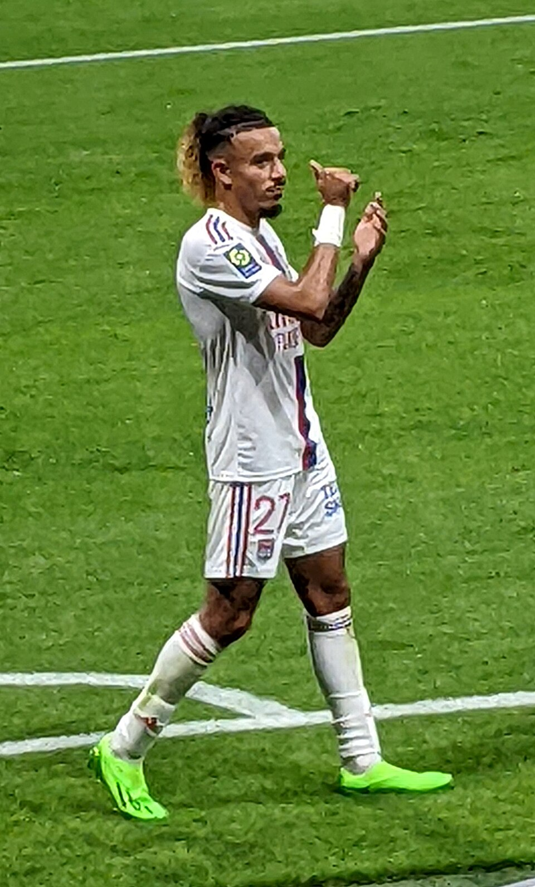
Malo Gusto
Sebleouf · CC BY-SA 4.0 · źródło
{kind=link}
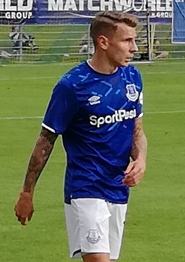
Lucas Digne
Espandero · CC BY-SA 4.0 · źródło
.jpg){kind=link}
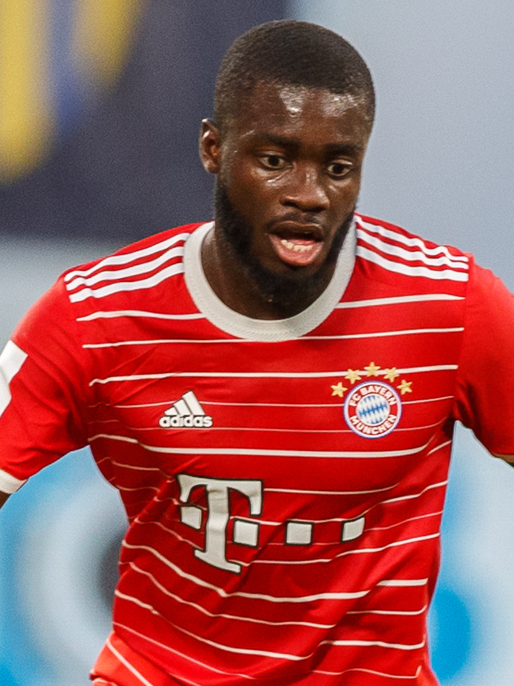
Dayot Upamecano
crop by Sepguilherme · CC BY-SA 4.0 · źródło
.jpg){kind=link}
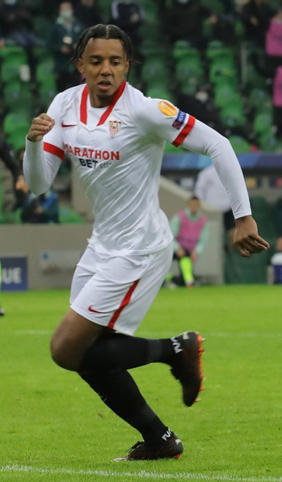
Jules Koundé
Дмитрий Пукалик · CC BY-SA 3.0 · źródło
{kind=link}
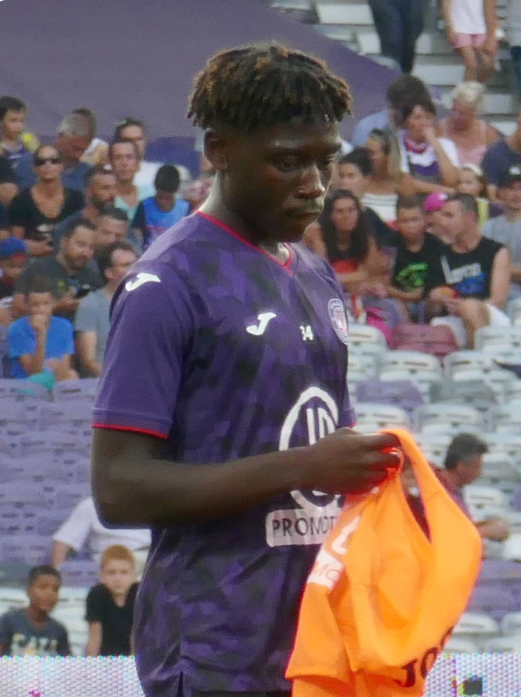
Manu Koné
Gaillac · CC BY-SA 4.0 · źródło
_(cropped).jpg){kind=link}
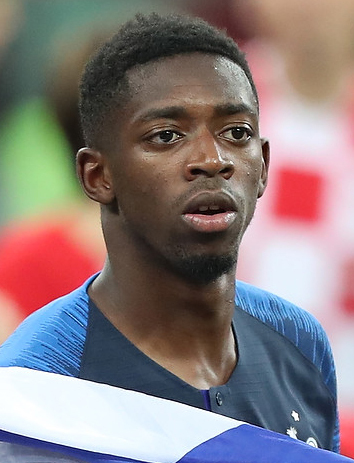
Ousmane Dembélé
Антон Зайцев · CC BY-SA 3.0 · źródło
.jpg){kind=link}
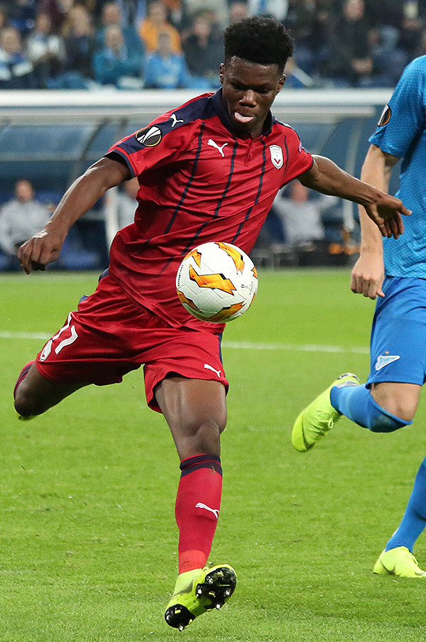
Aurélien Tchouaméni
Кирилл Венедиктов · CC BY-SA 3.0 · źródło
{kind=link}
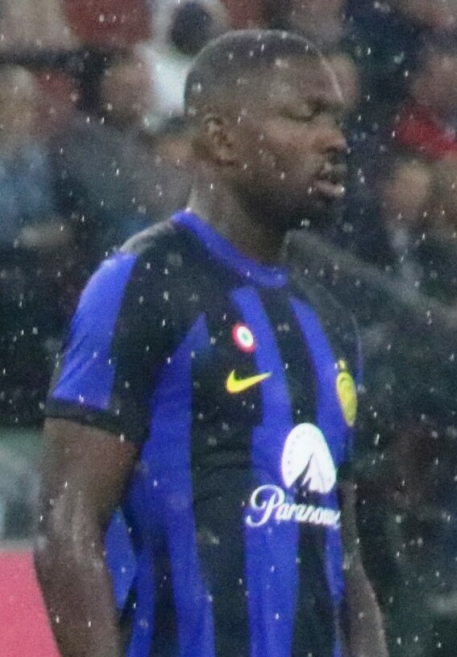
Marcus Thuram
Werner100359 · CC BY-SA 4.0 · źródło
{kind=link}
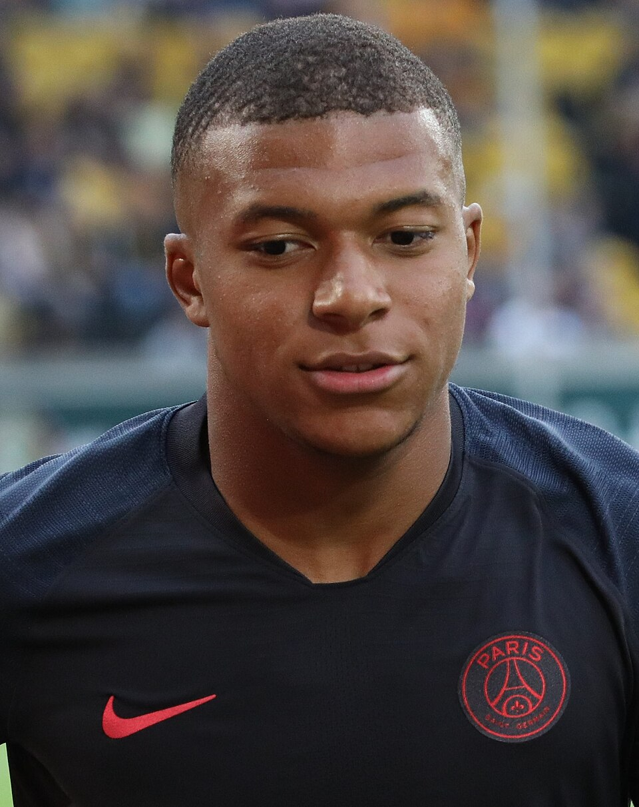
Kylian Mbappé
Carlo Bruil Fotografie · CC BY-SA 4.0 · źródło
.jpg){kind=link}
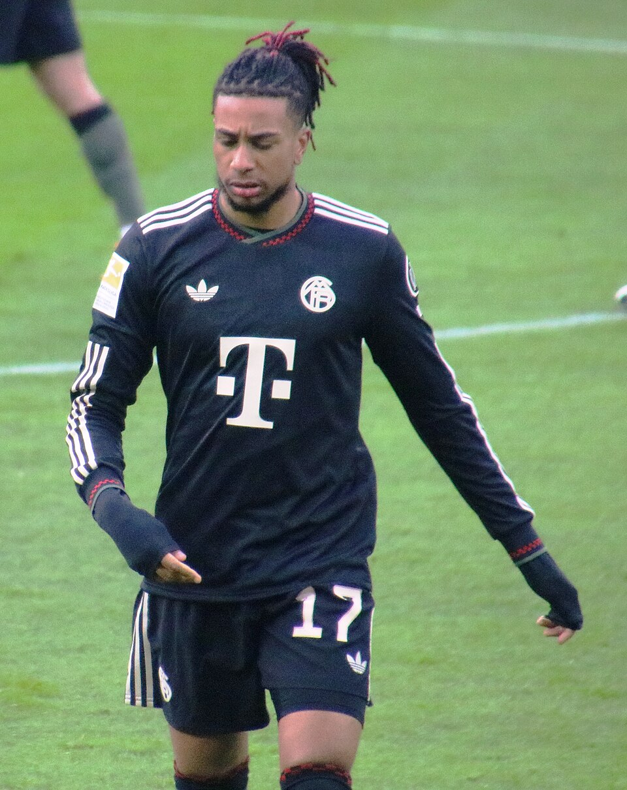
Michael Olise
Werner100359 · CC BY-SA 4.0 · źródło
_10.jpg){kind=link}
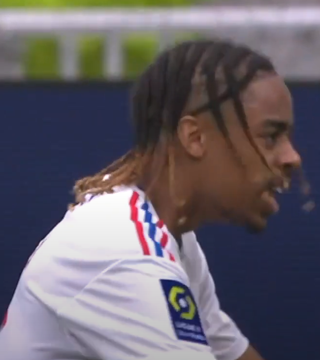
{kind=link}
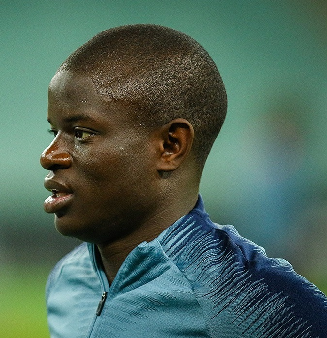
{kind=link}
{kind=link}
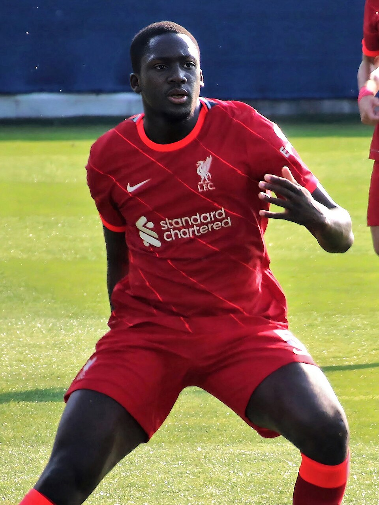
Ibrahima Konaté
crop by Wenflou · CC BY-SA 4.0 · źródło
_15_(cropped).jpg){kind=link}
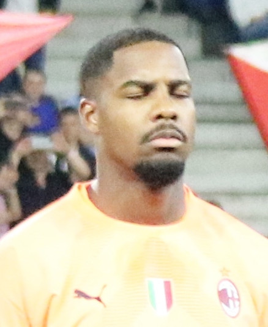
Mike Maignan
Werner100359 · CC BY-SA 4.0 · źródło
{kind=link}
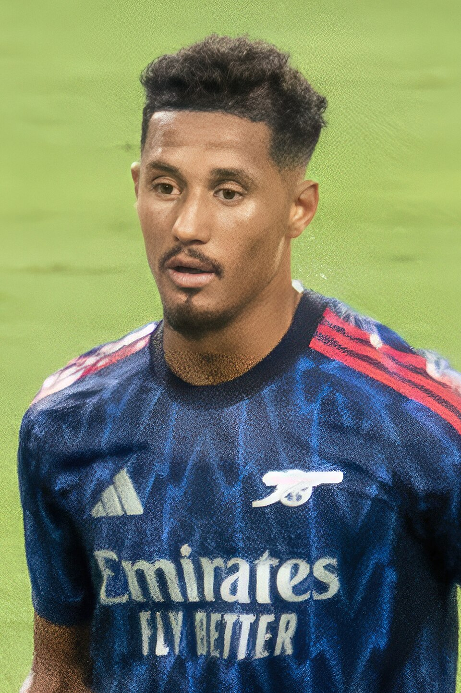
William Saliba
Chensiyuan · CC BY-SA 4.0 · źródło
.jpg){kind=link}
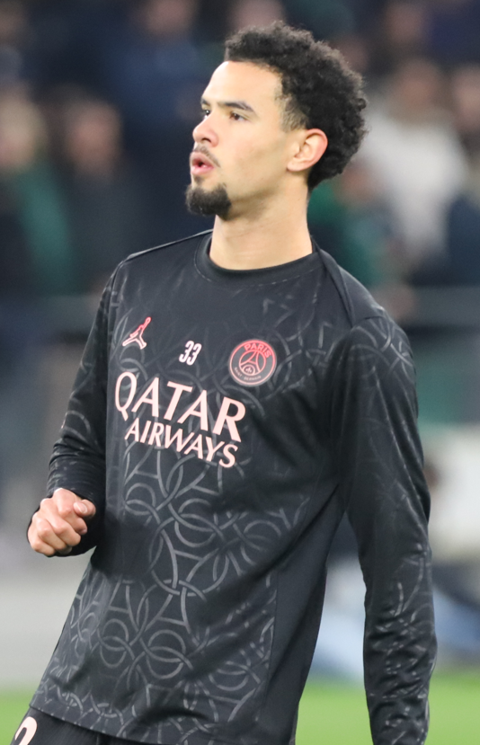
Warren Zaïre-Emery
Paté kroute · CC BY-SA 4.0 · źródło
{kind=link}
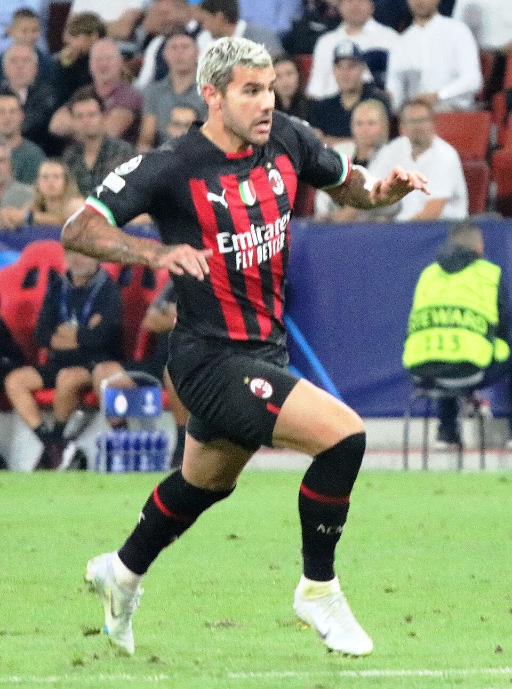
Théo Hernandez
Werner100359 · CC BY-SA 4.0 · źródło
_Th%C3%A9o_Hernandez.jpg){kind=link}
{kind=link}

{kind=link}
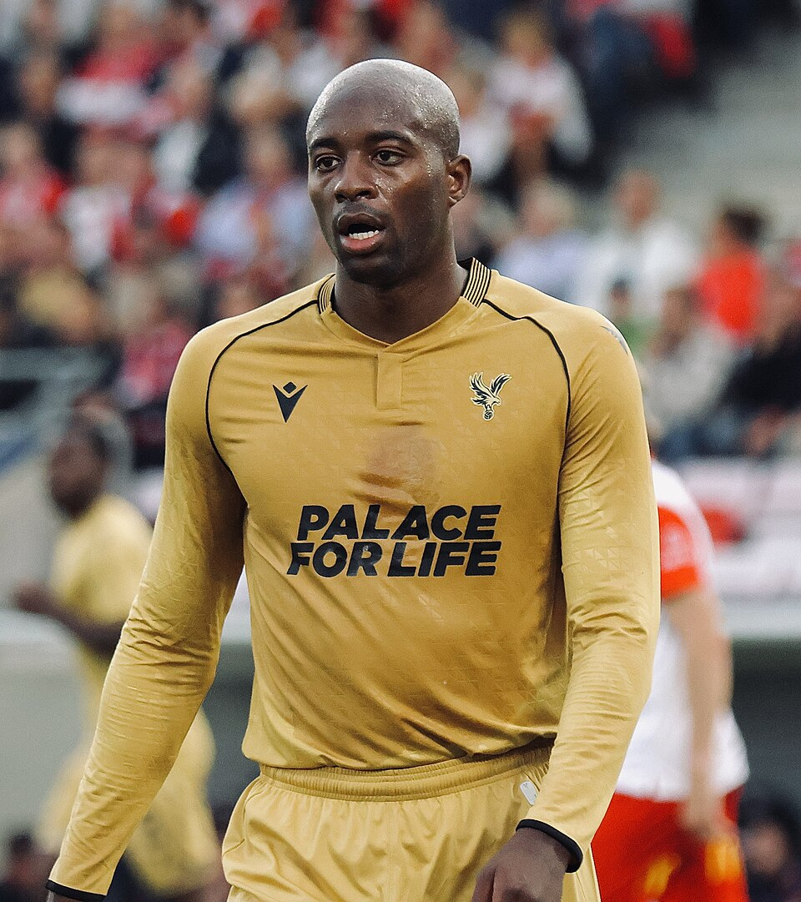
.jpg){kind=link}
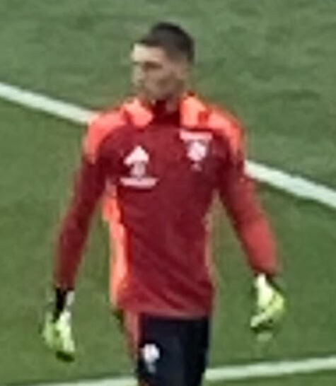
.jpg){kind=link}
{kind=link}
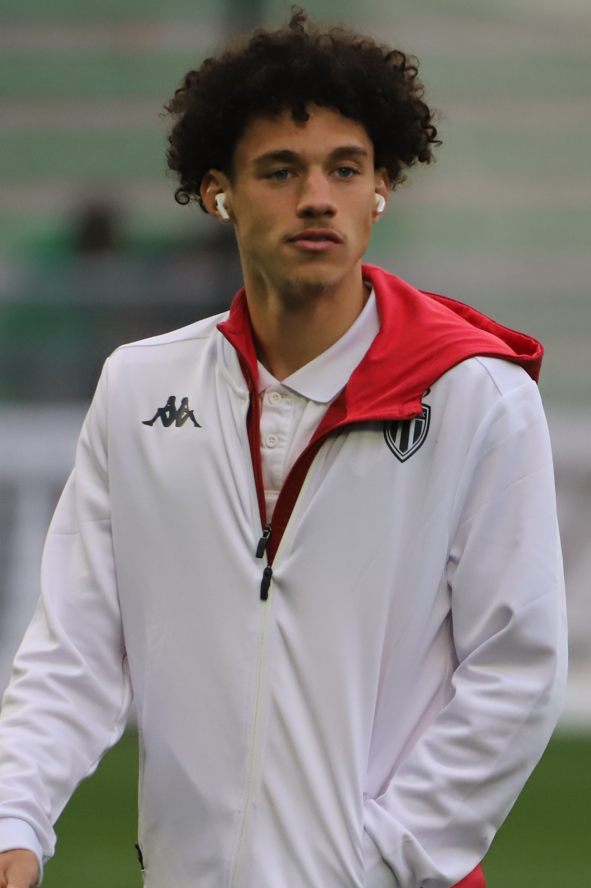
{kind=link}
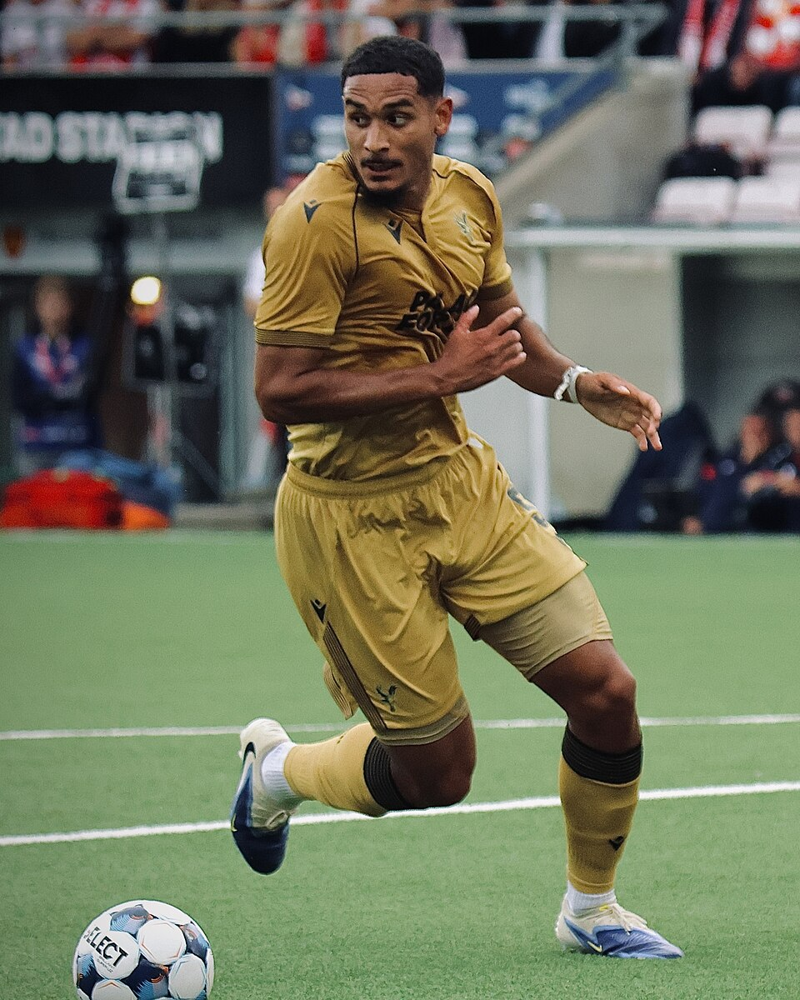
.jpg){kind=link}